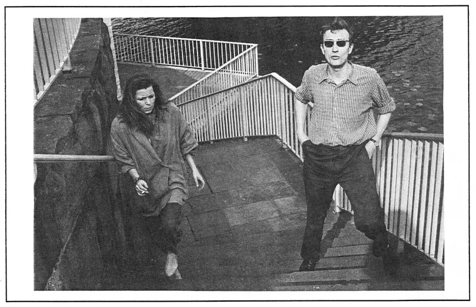
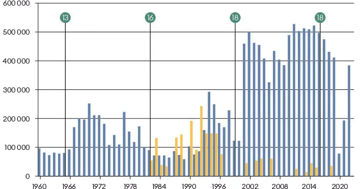
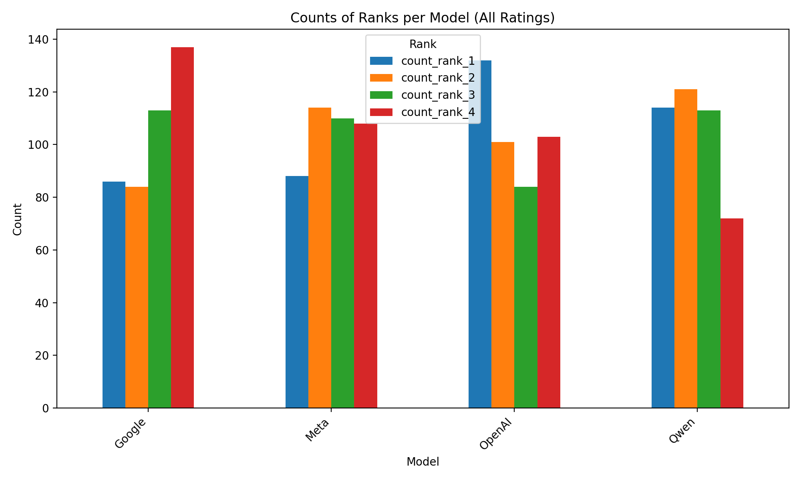
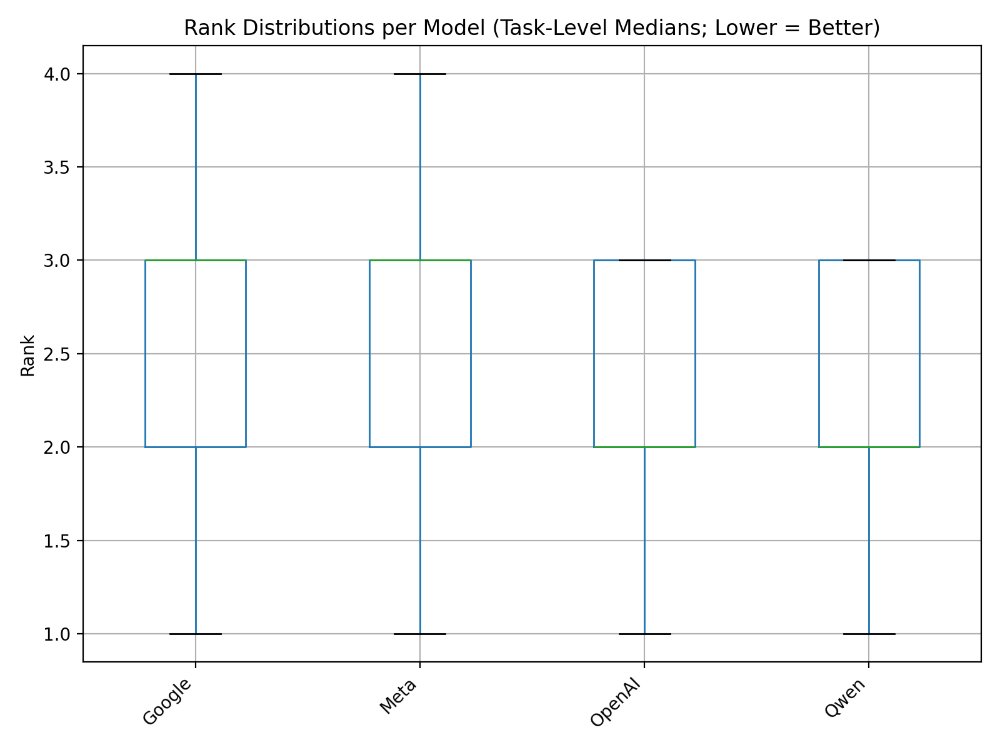
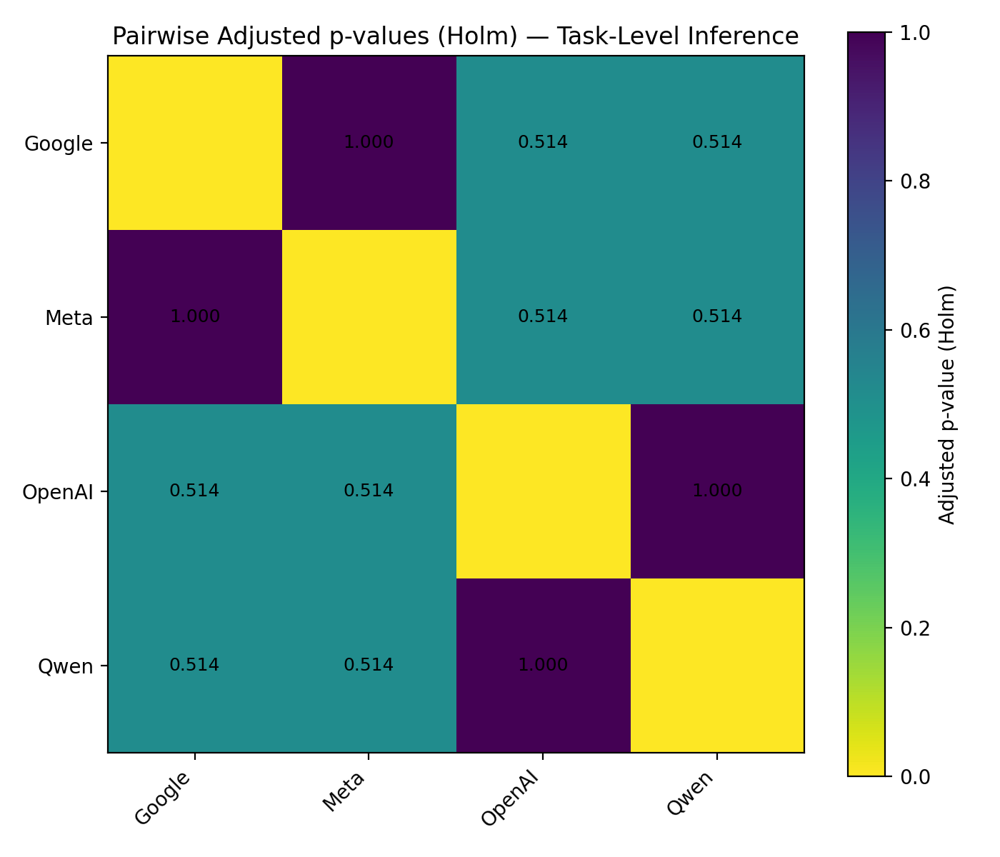

Seeing History Unseen: Evaluating Vision-Language Models for WCAG-Compliant Alt-Text in Digital Heritage Collections
![]()
Digitized heritage collections remain partially inaccessible because images often lack descriptive alternative text (alt-text). We evaluate whether contemporary Vision-Language Models (VLMs) can assist in producing WCAG-compliant alt-text for heterogeneous historical materials. Using a 100-item dataset curated from the Stadt.Geschichte.Basel Open Research Data Platform—covering photographs, maps, drawings, objects, diagrams, and print ephemera across multiple eras—we generate candidate descriptions with four VLMs (Google Gemini 2.5 Flash Lite, Meta Llama 4 Maverick, OpenAI GPT-4o mini, Qwen 3 VL 8B Instruct). Our pipeline fixes WCAG and output constraints in the system prompt and injects concise, collection-specific metadata at the user turn to mitigate “lost-in-the-middle” effects. Feasibility benchmarks on a 20-item subset show 100 % coverage, latencies of ~2–4 s per item, and sub-cent costs per description. A rater study with 21 humanities scholars ranks per-image model outputs; Friedman and Wilcoxon tests reveal no statistically significant performance differences, while qualitative audits identify recurring errors: factual misrecognition, selective omission, and uncritical reproduction of harmful historical terminology. We argue that VLMs are operationally viable but epistemically fragile in heritage contexts. Effective adoption requires editorial policies, sensitivity filtering, and targeted human-in-the-loop review, especially for sensitive content and complex figures. The study contributes a transparent, reproducible workflow, a small but representative evaluation set, and an initial cost–quality baseline to inform GLAM institutions considering AI-assisted accessibility at scale.
alt-text, vision-language models, accessibility, WCAG 2.2, digital heritage collections, historical accuracy, human-in-the-loop, ethical implications, metadata, disability justice
1 Introduction
Digital archives promised to democratize access to cultural heritage, yet a significant portion of visual historical content remains inaccessible to people who are blind or have low vision. Many digitized photographs, maps, manuscripts, and other images lack descriptive alternative text (alt-text), creating an epistemic barrier to the past. This perpetuates an asymmetry in sensory access to history, where sighted people hold privileged insight into visual sources while non-sighted audiences encounter barriers to engagement. Making images legible through text is more than a technical fix—it is a matter of historical justice and inclusivity in digital humanities. Even beyond blind and low-vision users, rich image descriptions can aid others, such as neurodivergent readers who benefit from explicit detail that sighted users might glean implicitly (Cecilia, Moussouri, and Fraser 2023a).
Alt-text itself is not new: the HTML alt attribute dates back to the 1990s to support accessibility. However, providing high-quality image descriptions has often been a secondary priority in scholarly communication (Cecilia, Moussouri, and Fraser 2023b). Crafting alt-text is labor-intensive and typically left to authors or curators as a final step, if done at all. The burden often falls on sighted domain experts (not accessibility experts) to determine what information is or is not included in an image’s description. Human-generated descriptions are valued for capturing contextual meaning and can greatly enhance the accessibility, searchability, and archivability of digital scholarship. Yet in practice, many projects—especially smaller public history initiatives—lack the resources to implement accessibility from the start. The result is that visual evidence remains “unseen” by those who rely on assistive technologies.
Recent advances in multimodal AI offer a potential remedy. Vision-Language Models (VLMs) such as OpenAI’s GPT-4o mini, Google’s Gemini 2.5 Flash Lite, and open-weight systems like Meta’s Llama 4 Maverick or Qwen’s Qwen3 VL 8B Instruct now claim near-human performance in image description tasks. These models can ingest an image and generate a caption or description, essentially simulating the interpretive act of a human describer. If these models could produce alt-text that is both high-quality and historically informed as well as aligned with the Web Content Accessibility Guidelines (WCAG 2.2) (World Wide Web Consortium 2023), this would dramatically reduce the human effort required to remediate large collections. Heritage institutions could then scale up accessibility by generating alt-text for thousands of images, because the costs of machine captioning are negligible in comparison to a human expert. Consequently, the “readership” of digital archives would expand to include those who were previously excluded.
However, adopting automated captioning in a heritage context raises critical questions about truth, evidence, and authenticity. Delegating descriptive labor to machines is not a neutral technical fix; it is an act imbued with values and biases (Bowker and Star 1999). Deciding what details to include in an image’s description is technically difficult and ethically fraught, especially for historical images depicting people or sensitive cultural content. Vision models trained on general web images may uncritically adopt source terminology, inject anachronistic biases (e.g., misidentifying a 1920s street scene as “Victorian”), reinforce curatorial blind spots, or omit crucial context that a human historian would provide. There is also the danger of techno-ableism (Shew 2023), where the needs of people who are blind are superficially addressed by technology without truly empowering them or respecting their perspectives. Uncritical use of AI could inadvertently recenter the sighted, algorithmic point of view rather than the lived experience of those using the alt-text.
In this work, we argue that AI-generated alt-text for historical collections is a pivotal test case for the entanglement of AI innovation, archival practice, and disability justice. But can a machine “see” history as we do? If a model can convincingly describe a photograph from 100 years ago, how does that change the way we verify and trust such descriptions? Embracing this kind of “machine vision” in historical scholarship may require new protocols akin to earlier paradigm shifts (for example, the move from handwritten catalog cards to MARC records, or from microfilm to digital scans). Just as those changes demanded critical awareness of how tools shape historical discovery, the use of AI-generated descriptions demands a new hermeneutic of suspicion. We must learn to critically read machine-generated metadata, much as we read any human-produced finding aid or annotation (Fickers 2022).
The central purpose of our study is to assess whether and how current AI models can serve as accessibility assistants in a digital history workflow, and to critically examine the conditions and implications of their responsible use.
Our approach is interdisciplinary, blending computational experimentation with qualitative, historiographically informed analysis. The research design comprises the following steps:
- Data compilation: We compile a small yet balanced dataset consisting of historical sources and research data.
- Model selection and prompt development: We conduct WCAG-aligned prompt engineering and model selection in an iterative and exploratory manner.
- Generation and data collection: Once an optimal configuration of prompts and models has been identified, we generate candidate alternative texts (alt-text) and collect quantitative data on coverage, throughput, and unit cost.
- Expert evaluation: A group of 21 domain experts—humanities scholars with relevant disciplinary expertise—evaluate and rank the AI-generated alt-text.
- Expert review: The authors qualitatively assess a selection of the highest-ranked alt-text for factual accuracy, contextual adequacy, and bias reproductions.
- Analysis: We perform both statistical and qualitative analyses of the data obtained in steps 3–5.
By doing so, we aim to illuminate both the opportunities and the pitfalls of integrating AI into inclusive humanities scholarship.
1.1 Research questions
To guide this inquiry, we pose the following research questions:
- RQ1 Feasibility: What coverage, throughput, and unit cost can current VLMs achieve for WCAG-aligned alt-text on a heterogeneous heritage corpus, and where do they fail?
- RQ2 Relative quality: How do experts rank model outputs? What error patterns recur?
By answering these questions, our work helps to establish an empirical baseline for AI-assisted accessibility in the humanities. It also offers a reflective critique, examining AI outputs as objects of study in their own right. In the following sections, we outline our data and methodology (Section 2), present initial observations from our experiments (Section 3), and discuss implications for digital humanities practice (Section 4), before concluding with planned next steps (Section 5).
2 Data & Methodology
To ground our evaluation in a real-world scenario, we use data from Stadt.Geschichte.Basel, a large-scale historical research project tracing the history of Basel from 50’000 BCE to the present day. Research data is FAIRly available on the project’s Open Research Data Platform with metadata in a Dublin Core schema created by our Team for Research Data Management Team in a comprehensive annotation workflow, following guidelines set out in our handbook for the creation of non-discriminatory metadata (Mähr and Schnegg 2024).
Crucially, alt-text has been missing in our data model until now, rendering this collection an ideal testing ground for our study. The diversity of the corpus poses a significant challenge to automated captioning: many figures are visually and historically complex, requiring domain knowledge to describe properly. This data thus allows us to investigate whether AI captioners can handle the ‘long tail’ of content found in historical archives, beyond the everyday photographs on which many models are trained (Cetinic 2021).
2.1 Dataset for Alt Text Generation and Evaluation
For our survey, we compiled a dataset designed to represent both the heterogeneity of media types and the timeframe covered by the Stadt.Geschichte.Basel project. The project collection, published on our Open Research Data Platform, features more than 1700 media objects including metadata as of October 2025. From this corpus, we created a dataset to use for alt-text generation trials. This dataset comprises a hundred items and is released with this paper to be used for benchmarking purposes. Additionally, we created a subset of 20 items to make it more feasible to evaluate alt-text in an expert survey. For both sets, items were selected to maintain representativeness across the same dimensions while being manageable for expert reviewers to assess within a reasonable time frame. (See Section 8.1 for a more detailed description of the dataset).
All items were categorized into ten distinct media types (e.g. paintings, maps, scans of newspapers etc., see Section 8.1), allowing us to ensure a balanced distribution of content. Data types primarily comprise images and figures, maps and geodata, tables and statistics, and bibliographic references (Mähr 2022): Heterogeneous digitized items including historical photographs, reproductions of artifacts, city maps and architectural plans, handwritten letters and manuscripts, statistical charts, and printed ephemera (e.g., newspaper clippings, posters). We made sure to include items with complex visual structures (items that need additional information to convey their meaning, e.g., a legend for maps or diagrams), items with visible text in different languages (e.g., scans of newspapers or posters) as well as items with potentially sensitive content (e.g., content with derogatory and/or racist terminology).
To prompt the models as described below, we used JPG files at a standardized size of 800×800 pixels – the same resolution employed for human viewers on our online platform – and their corresponding metadata in JSON format.
2.2 Dataset Limitations
The number of eligible items is reduced by excluding items that are only available with placeholder images on our platform due to copyright restrictions. Additionally, due to the typesetting workflow during the production of the printed volumes, some collection items had to be split up into different files – maps and charts where the legend is provided in a second image file, separate from the main figure. This pertains to 19 out of 100 items in our data set, respectively four out of 20 items in the survey. Connections between these segmented files are made explicit in our metadata, but the models only receive one image file as input at a time, leading to some loss of information that would be visually available to a human reader. This could result in a lower description quality.
2.3 Model Selection
We selected four multimodal vision-language models (VLMs) representing a balance of open-weight and proprietary systems with comparable cost and capability:1
| Model | Developer | Openness | Context | Latency (s) | Input $/M | Output $/M | Notes |
|---|---|---|---|---|---|---|---|
| Gemini 2.5 Flash Lite | Proprietary | 1.05M | 0.42 | 0.10 | 0.40 | Fast, low-cost; optimized for captioning. | |
| Llama 4 Maverick | Meta | Open weights | 1.05M | 0.56 | 0.15 | 0.60 | Multilingual, multimodal reasoning. |
| GPT-4o mini | OpenAI | Proprietary | 128K | 0.58 | 0.15 | 0.60 | Compact GPT-4o variant; strong factual grounding. |
| Qwen3 VL 8B Instruct | Alibaba | Open-weight | 131K | 1.29 | 0.08 | 0.50 | Robust open baseline with OCR features. |
Selection criteria:
- Openness & diversity – two proprietary (OpenAI, Google) and two open-weight (Meta, Qwen) models.
- Cost-capability parity – all models priced between $0.08–$0.15/M input and $0.40–$0.60/M output tokens, with ≥100K context windows.
- Multilingual & visual competence – explicit support for German and image understanding.
The aim was to cover diverse architectures and governance regimes while maintaining fairness in performance evaluation.
2.4 Prompt engineering
We systematically varied prompt roles and placement, comparing instruction blocks in the system prompt versus the user prompt, and front-loading versus trailing constraints. We used the same user and system prompts for all models in zero-shot mode. Following evidence that models privilege information in short and well structured prompts, we fixed normative requirements (WCAG 2.2 aligned, de-CH style, length limits, handling of decorative/functional/complex images) in the system prompt and kept the user prompt minimal and image-bound to reduce “lost-in-the-middle” effects (Liu et al. 2023). The user prompt injected collection-specific metadata—title, description, EDTF date, era, creator/publisher/source—and a concise description of the purpose of the alt text, then the image URL. Adding this structured context markedly improved specificity, reduced refusals, and lowered hallucinations, consistent with retrieval-style findings that supplying external, task-relevant evidence boosts generation quality and faithfulness. Recent work confirms that vision–language models can serve such accessibility roles when embedded in context-rich pipelines.
In particular, user studies with blind and low-vision participants demonstrate that context-aware image descriptions—those combining visual and webpage metadata—are preferred and rated higher for quality, imaginability, and plausibility than context-free baselines (Mohanbabu and Pavel 2024).
This supports our design choice to inject structured collection metadata into the prompt..
These results are consistent with findings that prompt structure and multimodal fusion can systematically shift which visual cues VLMs rely on (Gavrikov et al. 2025).
By anchoring metadata before the image input, we effectively steer the model toward shape- and context-based reasoning rather than shallow texture correlations—an effect analogous to prompt-based cue steering observed in vision-language bias studies.
def build_prompt(media: MediaObject) -> str:
return f"""Titel: {media.title or "Kein Titel"}
Beschreibung: {media.description or "Keine Beschreibung"}
Ersteller: {media.creator or "Kein Ersteller"}
Herausgeber: {media.publisher or "Kein Herausgeber"}
Quelle: {media.source or "Keine Quelle"}
Datum: {media.date or "Kein Datum"}
Epoche: {media.era or "Keine Epoche"}""".strip()
def build_messages(
prompt: str, image_url: str
) -> tuple[list[dict[str, Any]], str, str]:
system = """ZIEL
Alt-Texte für historische und archäologische Sammlungsbilder.
Kurz, sachlich, zugänglich. Erfassung der visuellen Essenz für Screenreader.
REGELN
1. Essenz statt Detail. Keine Redundanz zum Seitentext, kein „Bild von“.
2. Zentralen Text im Bild wiedergeben oder kurz paraphrasieren.
3. Kontext (Epoche, Ort, Gattung, Material, Datierung) nur bei Relevanz für Verständnis.
4. Prägnante visuelle Merkmale nennen: Farbe, Haltung, Zustand, Attribute.
5. Karten/Diagramme: zentrale Aussage oder Variablen.
6. Sprache: neutral, präzise, faktenbasiert; keine Wertung, keine Spekulation.
7. Umfang:
* Standard: 90–180 Zeichen
* Komplexe Karten/Tabellen: max. 400 Zeichen
VERBOTE
* Kein alt=, Anführungszeichen, Preambeln oder Füllwörter („zeigt“, „darstellt“).
* Keine offensichtlichen Metadaten (z. B. Jahreszahlen aus Beschriftung).
* Keine Bewertungen, Hypothesen oder Stilkommentare.
* Keine Emojis oder emotionalen Begriffe.
HEURISTIKEN
Porträt: Person (Name, falls bekannt), Epoche, Pose oder Attribut, ggf. Funktion.
Objekt: Gattung, Material, Datierung, auffällige Besonderheit.
Dokument: Typ, Sprache/Schrift, Datierung, Kernaussage.
Karte: Gebiet, Zeitraum, Zweck, Hauptvariablen.
Ereignisfoto: Wer, was, wo, situativer Kontext.
Plakat/Cover: Titel, Zweck, zentrale Schlagzeile.
FALLBACK
Unklarer Inhalt: generische, aber sinnvolle Essenz aus Metadaten.
QUELLEN
Nur visuelle Analyse (Bildinhalt) und übergebene Metadaten. Keine externen Kontexte.""".strip()
return (
[
{"role": "system", "content": system},
{
"role": "user",
"content": [
{"type": "text", "text": prompt},
{"type": "image_url", "image_url": {"url": image_url}},
],
},
],
system,
prompt,
)2.5 Alt Text Generation and Post-processing
Using the carefully engineered system and user prompts, we ran each image through each of the four models, yielding four candidate descriptions per image. The generation process was automated via a Python script using OpenRouter as an API wrapper. We produced 80 candidate alt-texts (4 per image for n=20 images in our survey). After generation, no post-processing was applied. All results were stored along with metadata and model identifiers for evaluation.
No model refused to describe an image due to some built-in safety filter (labelling a historical photograph as sensitive content). Otherwise we would have handled those on a case-by-case basis by leaving that image for human description. Overall, this pipeline is designed to be simple, and maximize coverage (getting at least one description for every image) while maintaining quality through careful prompting.
2.6 Survey
Twenty-one humanities scholars ranked, per image, four model-generated descriptions from best (1) to worst (4) under WCAG-intended criteria for alt text. Raters were asked to consider: (a) concise rendering of the core visual content; (b) avoidance of redundant phrases (e.g., “image of”); (c) prioritisation of salient visual features (persons, objects, actions, visible text); and (d) context inclusion only when it improves comprehension. While factual accuracy, completeness, and absence of bias were not primary ranking dimensions, they may have been factored in implicitly.
2.7 Close reading
To check for these dimensions, the authors conducted a qualitative close reading of a selection of the generated alt-text. This analysis specifically targeted outputs that had received the highest rankings from the expert panel.
- Factual accuracy (Did the generated description contain any incorrect identifications of people, objects, or actions?)
- Contextual adequacy (Did the generated description include any incorrect or misleading historical context?)
- Bias reproduction (Did the model reproduce sensitive, derogatory, or racist terminology from the source material?)
This allowed us to investigate whether an alt-text could be ranked highly for WCAG alignment while simultaneously being factually incorrect or ethically problematic.
3 Results and Analysis
3.1 RQ1 Feasibility: Coverage, Throughput, and Unit Cost
To address the feasibility of automatic alt-text generation at corpus scale, we compared four state-of-the-art vision–language models (VLMs): Google Gemini 2.5 Flash Lite, Meta Llama 4 Maverick, OpenAI GPT-4o mini, and Qwen 3 VL 8B Instruct.
Each model generated alt-text descriptions for 20 representative heritage images selected for diversity of content, medium, and metadata completeness.
3.1.1 Coverage and reliability
All models returned non-empty outputs for all 20 prompts, yielding 100 % coverage and no failed responses.
This demonstrates that current VLMs can reliably produce textual descriptions even for heterogeneous heritage data without the need for fallback mechanisms.
3.1.2 Throughput and latency
Processing speed ranged between 0.24 – 0.43 items/s, corresponding to median latencies of 2 – 4 s per item. Models were accessed via OpenRouter.ai with the following providers: Google – gemini-2.5-flash-lite, OpenAI – gpt-4o-mini, Together – llama-4-maverick, and Alibaba – Qwen 3 VL 8B.
Qwen 3 VL 8B achieved the fastest throughput and lowest latency, while OpenAI GPT-4o mini was slower but consistent.
All models showed moderate response-time variability (≈ 1.7 – 10 s).
3.1.3 Cost efficiency
Unit generation costs differed by two orders of magnitude, reflecting API pricing rather than architectural complexity. According to OpenRouter.ai cost reports, costs per item ranged from $1.8 × 10⁻⁴ (Qwen) to $3.6 × 10⁻³ (OpenAI).
| Model | Coverage (%) | Throughput (items/s) | Median Latency (s) | Mean Cost (USD/item) |
|---|---|---|---|---|
| Google Gemini 2.5 Flash Lite | 100 | 0.31 | 2.72 | 0.000215 |
| Meta Llama 4 Maverick | 100 | 0.41 | 2.38 | 0.000395 |
| OpenAI GPT-4o Mini | 100 | 0.24 | 4.00 | 0.003625 |
| Qwen 3 VL 8B Instruct | 100 | 0.43 | 2.27 | 0.000182 |
3.1.4 Summary of RQ1
All models achieved complete coverage, acceptable latency, and minimal cost, confirming the technical and economic feasibility of automated alt text generation for large, heterogeneous cultural collections.
Failures were not due to empty outputs but to qualitative weaknesses, which are examined under RQ2.
3.2 RQ2 Relative Quality: Expert Ranking and Qualitative Assessment
3.2.1 Quantitative ranking analysis
Within each task, all models were directly compared; task-level median ranks were analyzed across the 20 tasks using the Friedman test for repeated measures, followed by pairwise Wilcoxon signed-rank tests with Holm–Bonferroni correction.
Agreement across tasks was quantified with Kendall’s W.
\[ \chi^2(3, N = 20) = 6.02, \quad p = 0.11, \quad W = 0.0085. \]
The results indicate no statistically significant difference among models (\(p > 0.05\)) and very low inter-task agreement (\(W \approx 0.01\)), implying that relative rankings varied substantially by task. Pairwise Wilcoxon comparisons (Section 8.4) showed no significant differences after correction (\(p_{\text{Holm}} > 0.5\)); unadjusted \(p\)-values suggested weak, non-significant trends favoring OpenAI GPT-4o Mini and Qwen 3 VL 8B over Google Gemini and Meta Llama.
3.2.2 Descriptive patterns
Twenty-one human experts each rated four alternative texts for 20 images, yielding a total of 420 individual ratings:
| Model | Rank 1 | Rank 2 | Rank 3 | Rank 4 |
|---|---|---|---|---|
| Google Gemini 2.5 Flash Lite | 86 | 84 | 113 | 137 |
| Meta Llama 4 Maverick | 88 | 114 | 110 | 108 |
| OpenAI GPT-4o Mini | 132 | 101 | 84 | 103 |
| Qwen 3 VL 8B Instruct | 114 | 121 | 113 | 72 |
OpenAI and Qwen outputs received more first-place and fewer last-place rankings, but overlapping rank distributions Section 8.3 indicate that these tendencies remain descriptive rather than inferentially significant.
3.2.3 Qualitative evaluation of top-rated outputs
A manual close reading inspection of hand-picked alt texts with highest mean rank scores revealed that even those outputs deemed to be the ‘best’ were not free from substantive and ethical shortcomings. In fact, all models produced at least one error. Some are easy to catch in a manual review (factually wrong descriptions), others require expert domain knowledge (reproduction of stereotypes).
3.2.3.1 Example for Factually Wrong Text

- Best-ranked alt-text: «Faltblatt der Gruppe ‹Freiräume für Frauen› (FFF) von 1992. Zwei Personen gehen eine Treppe hinunter, Frau mit Zigarette, Mann mit Sonnenbrille und Händen in den Hosentaschen» (Google Gemini 2.5 Flash Lite)
- Translation: “Leaflet of the ‘Freiräume für Frauen’ (FFF) group from 1992. Two people walk down a staircase, a woman with a cigarette, a man with sunglasses and hands in his pockets”
- Shortcoming: This description is factually incorrect. The two people in the photograph are clearly walking up the staircase, not down.
3.2.3.2 Example for Reproduction of Stereotypes

- Best-ranked alt-text: «Antisemitische Karikatur zur Eisenbahnverstaatlichung 1898. Links: Wehrhafte Helvetia zwingt knienden Geldverleiher nieder. Rechts: Kniende Helvetia bittet reichen Juden um Geld. Kontrastdarstellung zum Volksentscheid über die Eisenbahnverstaatlichung» (Meta Llama 4 Maverick)
- Translation: “Antisemitic caricature on the nationalization of the railways 1898. Left: Defensive Helvetia forces a kneeling moneylender down. Right: Kneeling Helvetia asks a rich Jew for money. Contrasting depiction of the referendum on the nationalization of the railways”
- Shortcoming: The text uncritically reproduces the term “reichen Juden” (rich Jew). This is an antisemitic stereotype likely drawn from the item’s metadata or biased training data, not a neutral description of the visual content.
3.2.3.3 Example for Selective Description

- Best ranked alt-text: «Balkendiagramm: Zuschauerzahlen von FC Basel (blau) und Konzerten (gelb) im St. Jakob-Stadion, 1960–2022. Höchstwerte bei Fußballspielen ab 2001 im neuen St. Jakob-Park, Einbruch 2020 durch Corona-Pandemie» (Meta Llama 4 Maverick)
- Translation: “Bar chart: Audience numbers for FC Basel (blue) and concerts (yellow) at St. Jakob-Stadion, 1960–2022. Peak values for football matches from 2001 in the new St. Jakob-Park, slump in 2020 due to the Corona pandemic”
- Shortcoming: The description is selective and unbalanced. It provides a detailed interpretation of the trends for the football matches (blue bars) but does not give information or interpretation about neither the concert attendance (yellow bars), nor the number of football matches (green circles), omitting a lot of the chart’s comparative data.
3.2.4 Interpretation
These examples for erroneous alt texts that still were ranked best in our survey illustrate that high quantitative rankings do not imply factual accuracy or ethical adequacy as illustrated by a close reading. Even when linguistically fluent and stylistically polished, VLM-generated alt texts may introduce epistemic distortions or perpetuate historical bias.
Quantitatively, no model achieved a statistically distinct performance profile; qualitatively, all exhibited systematic error patterns—misrecognition, omission, and uncritical reproduction of harmful source language.
This combination highlights the limits of rank-based evaluation alone: expert preference captures relative quality but not factual or ethical soundness.
3.3 Synthesis
- RQ1 Feasibility: All four VLMs achieved full coverage, low latency, and negligible cost, confirming the operational viability of automated WCAG-aligned alt text generation for heritage corpora.
- RQ2 Relative quality: Expert rankings showed no statistically significant hierarchy among models (\(p = 0.11\), \(W \approx 0.01\)), and qualitative inspection exposed factual inaccuracies, biased reproduction, and selective omissions even in top-rated outputs.
Overall, current VLMs can populate heritage databases at scale but require expert review and critical post-editing to ensure factual precision, ethical compliance, and contextual adequacy. Automated alt text workflows should therefore combine model ensembles with targeted human oversight to meet both accessibility and historiographical standards.
4 Discussion
Our findings confirm the central tension in using contemporary VLMs for heritage accessibility: they are operationally feasible but epistemically fragile. The 100% coverage, low latency, and negligible cost (RQ1) demonstrate that the technical and economic barriers to generating descriptions at a corpus-wide scale are virtually gone. However, the results from our expert evaluation (RQ2) reveal a gap between this operational success and the production of high-quality, trustworthy alt text.
The lack of a statistically significant winner among the models, combined with the low inter-task agreement (\(W \approx 0.01\)), is a key finding. It suggests that no single model is a reliable one-shot solution. A model that performs well on a photograph might fail on a diagram, and vice-versa. This variability reinforces the findings of mechanistic analyses like Gavrikov et al. (2025), which show that VLM outputs are highly sensitive to how their fusion layers mediate visual cues. Our metadata-rich prompts likely steered models toward more context-aware descriptions, but this “cue steering” was not a panacea against factual or ethical errors.
Critically, our mixed-methods approach exposed the limits of rank-based evaluation alone. The qualitative close reading (Section 3.2.3) revealed that outputs ranked highly by experts for WCAG alignment (i.e., conciseness and style) could still be factually wrong, ethically problematic, or epistemically shallow. The FFF flyer (m92410) example, which confidently misidentifies the walking direction, and the antisemitic cartoon (m91960) example, which uncritically reproduces the term ‘reicher Jude’ (rich Jew) from the source’s metadata, are stark illustrations. Fluency, in essence, is not a proxy for accuracy or ethical adequacy.
This study validates the framing of AI as an accessibility assistant (Section 1) rather than an autonomous author. The VLM output should be treated as a first draft for human review, not a final product. This reframes the labor of digital humanists: from authoring descriptions from scratch to critically editing machine-generated drafts. This aligns with the hybrid assessment frameworks proposed in educational research (Reihanian et al. 2025) and necessitates the “new hermeneutic of suspicion” (Fickers 2022) advocated in our introduction. Curators and historians must be trained in AI literacy (Strien et al. 2022) to spot subtle biases and misinterpretations that a fluent-sounding description might otherwise obscure.
Finally, our study has limitations. The expert ranking (n=21) was based on a relatively small (n=20) subset of images, which, while diverse in content, limits the statistical power of our quantitative analysis. Furthermore, the survey criteria explicitly prioritized WCAG stylistic guidelines over factual accuracy, a dimension we could only capture post-hoc via our qualitative close reading. A crucial missing component, which we intentionally bracketed to first establish a baseline, is the perspective of blind and low-vision users themselves. Without their input, any AI-driven accessibility solution risks falling into the trap of “techno-ableism” (Shew 2023), designing for a community without designing with them.
5 Future Work
Building on this study’s findings, we identify several critical paths for future research to bridge the gap between the operational promise and epistemic fragility of AI-generated alt text for heritage.
- Usability and User-Experience (UX) Studies: The most urgent next step is to move beyond expert-as-proxy and engage directly with blind and low-vision (BLV) users. Future work should conduct qualitative usability studies to assess how BLV readers experience these AI-generated descriptions. Do they find them helpful, confusing, or biased? Does the inclusion of metadata (as prompted) improve or hinder “imaginability”? This addresses the techno-ableism critique and centers the lived experience of those the technology claims to serve.
- Domain-Specific Fine-Tuning: This study relied on general-purpose VLMs with prompt engineering. A promising avenue is the fine-tuning of open-weight models (such as Meta’s Llama 4 or Qwen’s Qwen3 VL) on a high-quality, domain-specific dataset. By training a model on thousands of expert-vetted alt texts from GLAM (Galleries, Libraries, Archives, and Museums) collections, it may be possible to create a model that is more factually accurate, context-aware, and ethically sensitive to heritage content than its general-purpose counterparts.
- Developing Human-in-the-Loop (HITL) Workflows: Our results confirm the necessity of expert review. Future research should move from evaluation to implementation by designing and testing HITL editorial interfaces. What is the most effective workflow for a historian to review, correct, and approve AI-generated alt text? How can we best integrate AI-generated “drafts” into existing collections management systems (CMS) and research data platforms, complete with policies for handling sensitive content?
- Scaling the Benchmark: This study established a 100-item benchmark dataset. The next phase should involve using this larger dataset to conduct a more robust quantitative analysis. This would allow for a more granular breakdown of model performance by media type (e.g., maps vs. manuscripts vs. photographs) and help establish more reliable cost-quality trade-offs to guide GLAM institutions in adopting these technologies.
6 Acknowledgements
We thank Cristina Münch and Noëlle Schnegg for curating metadata and providing image assets from the Stadt.Geschichte.Basel collection. We are grateful to the 21 expert participants for their careful rankings and comments. For insightful feedback on an early draft, we thank Dr. Mehrdad Almasi (Luxembourg Centre for Contemporary and Digital History, C²DH). Any remaining errors are our own.
7 References
8 Appendix
8.1 Dataset description
In both our selection of 100-item and the 20-item survey subset, we tried to find an overall balance between all data types and eras that make up the Stadt.Geschichte.Basel collection. Due to its historical nature, not all data types appear in all eras, and the smaller size of the survey subset accentuates these constraints. We dropped Painting items and the Antiquity era from the survey subset due to their low prevalence in our corpus.
8.1.1 Distribution by Type
| Type | Dataset | Survey |
|---|---|---|
| Painting | 12 | 0 |
| Object | 13 | 2 |
| Photograph (Archaeological Site) | 10 | 2 |
| Photograph (Historical Scenes) | 10 | 2 |
| Scan of Newspapers, Posters, Lists, etc. | 10 | 3 |
| Drawing (Archaeological Reconstruction) | 10 | 3 |
| Drawing (Historical Drawing) | 10 | 2 |
| Map | 10 | 2 |
| Diagram (Statistics) | 10 | 2 |
| Diagram (Flowchart, Schema etc.) | 5 | 2 |
| Total | 100 | 20 |
8.1.2 Distribution by Era
With regards to the historical eras represented in the subset, we aimed to cover the full chronological span of the Stadt.Geschichte.Basel project, from 50’000 BCE until the 21st century. Since each item is tagged with an era in the metadata, we could systematically select items across periods in a way that resembles that distribution in the whole research data set (at the time of writing). Items from some eras, e.g. Antiquity and 21st Century, are less frequent in the overall collection which is reflected in a lower representation in our dataset.
| Era | Dataset | Survey |
|---|---|---|
| Protohistory | 11 | 3 |
| Antiquity | 3 | 0 |
| Middle Ages | 16 | 2 |
| Early Modern period | 21 | 3 |
| 19th century | 19 | 5 |
| 20th century | 25 | 5 |
| 21st century | 5 | 2 |
| Total | 100 | 20 |
8.1.3 Distribution across Era and Type (survey count in parentheses)
| Type | Protohistory | Antiquity | Middle Ages | Early Modern Period | 19th century | 20th century | 21st century |
|---|---|---|---|---|---|---|---|
| Scan of Newspapers, Lists, etc. | 0 (0) | 0 (0) | 1 (0) | 2 (0) | 3 (2) | 4 (1) | 0 (0) |
| Photograph (Historical Scenes) | 0 (0) | 0 (0) | 0 (0) | 0 (0) | 3 (1) | 7 (1) | 0 (0) |
| Photograph (Archaeological Site) | 0 (0) | 0 (0) | 0 (0) | 0 (0) | 0 (0) | 5 (1) | 5 (1) |
| Object | 3 (0) | 0 (0) | 3 (0) | 6 (1) | 1 (1) | 0 (0) | 0 (0) |
| Map | 1 (0) | 3 (0) | 1 (0) | 1 (0) | 1 (1) | 3 (1) | 0 (0) |
| Drawing (Historical Drawing) | 0 (0) | 0 (0) | 1 (0) | 5 (2) | 4 (0) | 0 (0) | 0 (0) |
| Drawing (Archaeological Reconstruction) | 5 (3) | 0 (0) | 5 (0) | 0 (0) | 0 (0) | 0 (0) | 0 (0) |
| Diagram (Statistics) | 0 (0) | 0 (0) | 0 (0) | 1 (0) | 2 (0) | 6 (2) | 1 (1) |
| Diagram (Flowchart, Schema etc.) | 0 (0) | 0 (0) | 3 (2) | 0 (0) | 1 (0) | 1 (0) | 0 (0) |
| Painting | 0 (0) | 0 (0) | 2 (0) | 6 (0) | 4 (0) | 0 (0) | 0 (0) |
8.1.4 Language Distribution
Our research data collection primarily contains items in German, with a small number of items in Latin, French and Dutch. We aimed to reflect this language distribution in our selection. In a similar vein, we wanted to take into account different typographic styles. However, writing is not fully legible in many cases anyway – since we are working with 800x800 pixel JPG image thumbnails – and thus played only a minor factor in the selection process.
| Language | Dataset | Survey |
|---|---|---|
| German | 33 | 9 |
| Latin | 8 | 2 |
| French | 2 | 0 |
| Without written text | 57 | 9 |
8.1.5 Spatial Context
While geospatial context is not a part of our data model, most items in the Stadt.Geschichte.Basel collection can be associated with specific locations in Basel or elsewhere. The geographical distribution of the collection items did not influence our selection process directly, but a rough categorization was done afterwards to see whether differences in geographical scope are represented in our dataset.
| Spatial Context | Dataset | Survey |
|---|---|---|
| City of Basel | 60 | 14 |
| Basel Region/Northwestern Switzerland/Upper Rhine | 16 | 2 |
| Switzerland | 6 | 0 |
| Switzerland and Neighbouring Countries | 5 | 1 |
| Europe | 3 | 1 |
| Worldwide | 5 | 2 |
| NA | 5 | 0 |
8.1.6 Media Complexity
For technical reasons, some objects in our collection consist of several media items. These are legends for maps and diagrams, visually supplying information that is crucial to fully grasp the meaning of the media item.
| Media Complexity | Dataset | Survey |
|---|---|---|
| Single-Item Object | 81 | 19 |
| Multiple-Item Object (Figure and separate Legend) | 16 | 4 |
8.2 System Performance Analysis

8.3 Rank Distributions and Aggregate Performance


| objectid | model | count_rank_1 | count_rank_2 | count_rank_3 | count_rank_4 |
|---|---|---|---|---|---|
| m12965 | google/gemini-2.5-flash-lite | 0 | 9 | 8 | 4 |
| m12965 | meta-llama/llama-4-maverick | 11 | 0 | 4 | 6 |
| m12965 | openai/gpt-4o-mini | 7 | 5 | 4 | 5 |
| m12965 | qwen/qwen3-vl-8b-instruct | 3 | 7 | 5 | 6 |
| m13176 | google/gemini-2.5-flash-lite | 2 | 4 | 5 | 10 |
| m13176 | meta-llama/llama-4-maverick | 4 | 4 | 10 | 3 |
| m13176 | openai/gpt-4o-mini | 6 | 6 | 2 | 7 |
| m13176 | qwen/qwen3-vl-8b-instruct | 9 | 7 | 4 | 1 |
| m15298_1 | google/gemini-2.5-flash-lite | 6 | 1 | 6 | 8 |
| m15298_1 | meta-llama/llama-4-maverick | 2 | 11 | 7 | 1 |
| m15298_1 | openai/gpt-4o-mini | 6 | 2 | 4 | 9 |
| m15298_1 | qwen/qwen3-vl-8b-instruct | 7 | 7 | 4 | 3 |
| m20435 | google/gemini-2.5-flash-lite | 5 | 5 | 8 | 3 |
| m20435 | meta-llama/llama-4-maverick | 2 | 6 | 4 | 9 |
| m20435 | openai/gpt-4o-mini | 3 | 4 | 6 | 8 |
| m20435 | qwen/qwen3-vl-8b-instruct | 11 | 6 | 3 | 1 |
| m22924 | google/gemini-2.5-flash-lite | 5 | 3 | 4 | 9 |
| m22924 | meta-llama/llama-4-maverick | 7 | 3 | 5 | 6 |
| m22924 | openai/gpt-4o-mini | 3 | 9 | 6 | 3 |
| m22924 | qwen/qwen3-vl-8b-instruct | 6 | 6 | 6 | 3 |
| m28635 | google/gemini-2.5-flash-lite | 2 | 6 | 7 | 6 |
| m28635 | meta-llama/llama-4-maverick | 6 | 9 | 2 | 4 |
| m28635 | openai/gpt-4o-mini | 13 | 3 | 4 | 1 |
| m28635 | qwen/qwen3-vl-8b-instruct | 0 | 3 | 8 | 10 |
| m29084 | google/gemini-2.5-flash-lite | 2 | 9 | 10 | 0 |
| m29084 | meta-llama/llama-4-maverick | 2 | 2 | 2 | 15 |
| m29084 | openai/gpt-4o-mini | 7 | 5 | 3 | 6 |
| m29084 | qwen/qwen3-vl-8b-instruct | 10 | 5 | 6 | 0 |
| m34620 | google/gemini-2.5-flash-lite | 3 | 8 | 9 | 1 |
| m34620 | meta-llama/llama-4-maverick | 5 | 5 | 4 | 7 |
| m34620 | openai/gpt-4o-mini | 4 | 5 | 3 | 9 |
| m34620 | qwen/qwen3-vl-8b-instruct | 9 | 3 | 5 | 4 |
| m37030_1 | google/gemini-2.5-flash-lite | 7 | 6 | 5 | 3 |
| m37030_1 | meta-llama/llama-4-maverick | 3 | 7 | 4 | 7 |
| m37030_1 | openai/gpt-4o-mini | 9 | 7 | 3 | 2 |
| m37030_1 | qwen/qwen3-vl-8b-instruct | 2 | 1 | 9 | 9 |
| m37716 | google/gemini-2.5-flash-lite | 3 | 2 | 7 | 9 |
| m37716 | meta-llama/llama-4-maverick | 3 | 4 | 8 | 6 |
| m37716 | openai/gpt-4o-mini | 8 | 8 | 2 | 3 |
| m37716 | qwen/qwen3-vl-8b-instruct | 7 | 7 | 4 | 3 |
| m39198_1 | google/gemini-2.5-flash-lite | 3 | 2 | 1 | 15 |
| m39198_1 | meta-llama/llama-4-maverick | 4 | 5 | 9 | 3 |
| m39198_1 | openai/gpt-4o-mini | 10 | 4 | 4 | 3 |
| m39198_1 | qwen/qwen3-vl-8b-instruct | 4 | 10 | 7 | 0 |
| m82972 | google/gemini-2.5-flash-lite | 11 | 5 | 3 | 2 |
| m82972 | meta-llama/llama-4-maverick | 2 | 9 | 7 | 3 |
| m82972 | openai/gpt-4o-mini | 5 | 5 | 4 | 7 |
| m82972 | qwen/qwen3-vl-8b-instruct | 3 | 2 | 7 | 9 |
| m88415_1 | google/gemini-2.5-flash-lite | 1 | 3 | 1 | 16 |
| m88415_1 | meta-llama/llama-4-maverick | 5 | 9 | 7 | 0 |
| m88415_1 | openai/gpt-4o-mini | 9 | 3 | 5 | 4 |
| m88415_1 | qwen/qwen3-vl-8b-instruct | 6 | 6 | 8 | 1 |
| m91000_1 | google/gemini-2.5-flash-lite | 1 | 3 | 6 | 11 |
| m91000_1 | meta-llama/llama-4-maverick | 7 | 7 | 6 | 1 |
| m91000_1 | openai/gpt-4o-mini | 5 | 6 | 2 | 8 |
| m91000_1 | qwen/qwen3-vl-8b-instruct | 8 | 5 | 7 | 1 |
| m91960 | google/gemini-2.5-flash-lite | 2 | 4 | 8 | 7 |
| m91960 | meta-llama/llama-4-maverick | 10 | 6 | 4 | 1 |
| m91960 | openai/gpt-4o-mini | 4 | 1 | 6 | 10 |
| m91960 | qwen/qwen3-vl-8b-instruct | 5 | 10 | 3 | 3 |
| m92357 | google/gemini-2.5-flash-lite | 8 | 3 | 5 | 5 |
| m92357 | meta-llama/llama-4-maverick | 3 | 11 | 3 | 4 |
| m92357 | openai/gpt-4o-mini | 5 | 4 | 7 | 5 |
| m92357 | qwen/qwen3-vl-8b-instruct | 5 | 3 | 6 | 7 |
| m92410 | google/gemini-2.5-flash-lite | 14 | 0 | 3 | 4 |
| m92410 | meta-llama/llama-4-maverick | 3 | 6 | 6 | 6 |
| m92410 | openai/gpt-4o-mini | 3 | 11 | 4 | 3 |
| m92410 | qwen/qwen3-vl-8b-instruct | 1 | 4 | 8 | 8 |
| m94271 | google/gemini-2.5-flash-lite | 9 | 3 | 5 | 4 |
| m94271 | meta-llama/llama-4-maverick | 2 | 3 | 4 | 12 |
| m94271 | openai/gpt-4o-mini | 9 | 4 | 6 | 2 |
| m94271 | qwen/qwen3-vl-8b-instruct | 1 | 11 | 6 | 3 |
| m94775 | google/gemini-2.5-flash-lite | 0 | 2 | 2 | 17 |
| m94775 | meta-llama/llama-4-maverick | 4 | 5 | 9 | 3 |
| m94775 | openai/gpt-4o-mini | 7 | 5 | 8 | 1 |
| m94775 | qwen/qwen3-vl-8b-instruct | 10 | 9 | 2 | 0 |
| m95804 | google/gemini-2.5-flash-lite | 2 | 6 | 10 | 3 |
| m95804 | meta-llama/llama-4-maverick | 3 | 2 | 5 | 11 |
| m95804 | openai/gpt-4o-mini | 9 | 4 | 1 | 7 |
| m95804 | qwen/qwen3-vl-8b-instruct | 7 | 9 | 5 | 0 |
| Statistic | Value |
|---|---|
| Friedman χ² | 6.0191 |
| p-value | 0.1107 |
| Kendall’s W (observed) | 0.0085 |
| Kendall’s W (from Friedman) | 0.1003 |
| Number of tasks | 20 |
| Number of unique raters | 21 |
| Total submissions | 420 |
8.4 Pairwise Comparison of Models

| model_a | model_b | statistic | pvalue | p_adjusted_holm |
|---|---|---|---|---|
| google/gemini-2.5-flash-lite | meta-llama/llama-4-maverick | 100.0 | 0.864524 | 1.0 |
| google/gemini-2.5-flash-lite | openai/gpt-4o-mini | 59.5 | 0.088574 | 0.513834 |
| google/gemini-2.5-flash-lite | qwen/qwen3-vl-8b-instruct | 60.5 | 0.095709 | 0.513834 |
| meta-llama/llama-4-maverick | openai/gpt-4o-mini | 60.0 | 0.085639 | 0.513834 |
| meta-llama/llama-4-maverick | qwen/qwen3-vl-8b-instruct | 61.5 | 0.103028 | 0.513834 |
| openai/gpt-4o-mini | qwen/qwen3-vl-8b-instruct | 105.0 | 1.0 | 1.0 |
8.5 Reproducibility and Data Availability
All code, datasets, and analysis artefacts supporting this study are openly available under open licenses at:
Repository: https://github.com/maehr/chr2025-seeing-history-unseen
Persistent record: DOI 10.5281/zenodo.17639517
The repository provides a complete, executable research pipeline for the CHR 2025 paper “Seeing History Unseen: Evaluating Vision-Language Models for WCAG-Compliant Alt-Text in Digital Heritage Collections.”
Key components:
src/— source code for data generation, cleaning, and statistical analysisruns/— timestamped outputs of alt-text generation runs, including raw API responsesdata/processed/— anonymised survey and ranking data used for evaluationanalysis/— statistical summaries, CSVs, and figures referenced in this appendixpaper/images/— figure assets for the manuscript
Reference run: runs/20251021_233530/ — canonical example with subsample configuration (20 media objects × 4 models). All tables and plots in this appendix derive from this run and subsequent survey analyses.
A pre-configured GitHub Codespace enables fully containerised reproduction without local setup. All scripts print output paths and runtime logs to ensure transparent traceability.
8.6 FAIR and CARE Compliance
The project adheres to the FAIR (Findable, Accessible, Interoperable, Reusable) and CARE (Collective Benefit, Authority to Control, Responsibility, Ethics) principles for open humanities data.
| Principle | Implementation in this project |
|---|---|
| Findable (FAIR) | Repository indexed on GitHub and Zenodo with persistent DOI; structured metadata and semantic filenames. |
| Accessible | Publicly accessible under AGPL-3.0 (code) and CC BY 4.0 (data, documentation). No authentication barriers. |
| Interoperable | Machine-readable CSV, JSONL, and Parquet formats; consistent column schemas; human- and machine-readable metadata. |
| Reusable | Version-controlled pipeline, deterministic random seeds, explicit dependencies, and complete provenance logs. |
| Collective Benefit (CARE) | Focus on accessibility and inclusion in digital heritage; results aim to improve equitable access to cultural data. |
| Authority to Control | No personal or culturally sensitive material; contributors retain authorship and citation credit. |
| Responsibility | Transparent methodological reporting and ethical safeguards for AI-assisted heritage interpretation. |
| Ethics | Evaluation limited to non-personal, publicly available heritage materials; compliance with institutional research ethics guidelines. |
Together, these practices ensure that the entire workflow—from model evaluation to figure generation—is transparent, reproducible, and reusable across digital humanities and accessibility research contexts.
Footnotes
Cheaper models such as Mistral Pixtral 12B, AllenAI Molmo 7B-D, and OpenAI GPT-4.1 Nano were tested but excluded due to consistently empty or nonsensical outputs.↩︎